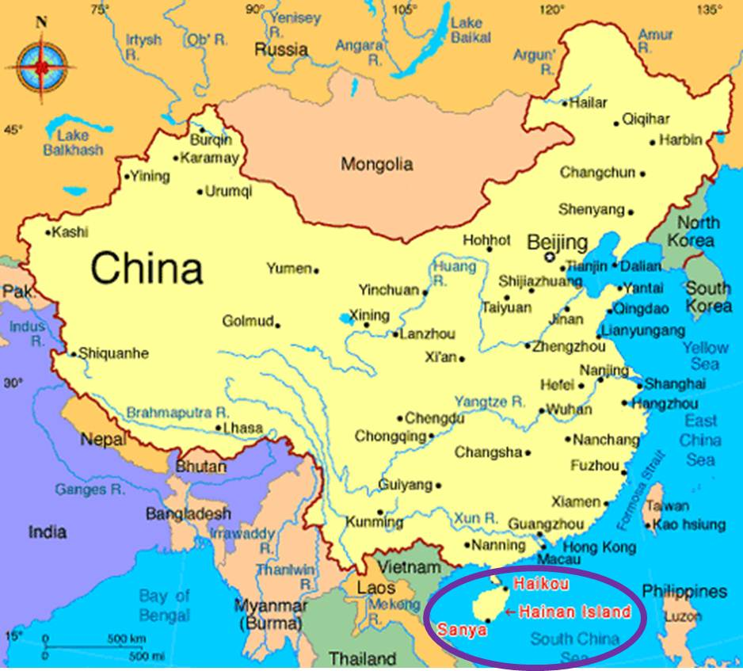
inside the purple circle. It is the
southernmost part of China.

picking us up for our ride to the airport at 4:50am. How
he could be that happy about giving a ride that early is
amazing to me!
Chunhai - you'll have to get your own!"
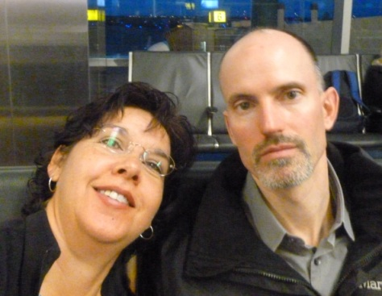

This is in the OKC airport while we waited for our first flight.
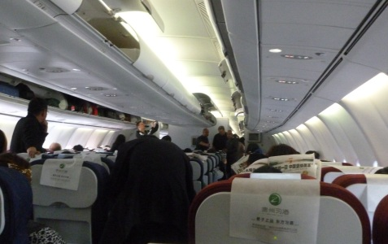
slept a wink on the 14 hour flight. Our Ambiens were duds!
sleeping well for days and now we're on our 31st hour of almost no sleep - fun times!

airport, Eric got a call. So this was
what I did for our "arrival photo."

Here our friend Diody helps us with a ride from the airport.
We were over an hour delayed - it was about 12:30am at
this point and he had to get up early the next morning, but
he was also all smiles - just like Chunhai.

move to a new house.

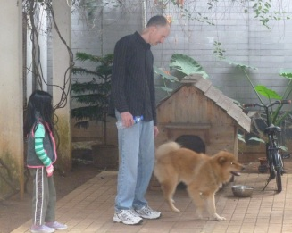
(BTW - The dog's name has nothing to do with the OU Sooners.)
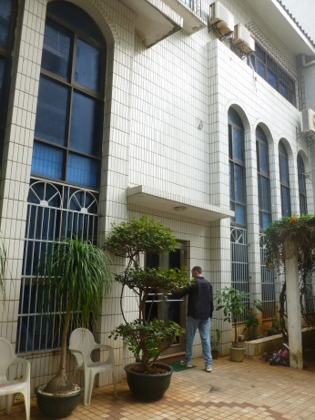
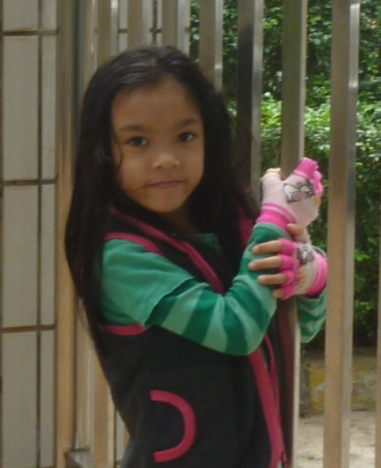
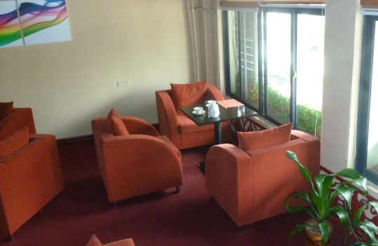
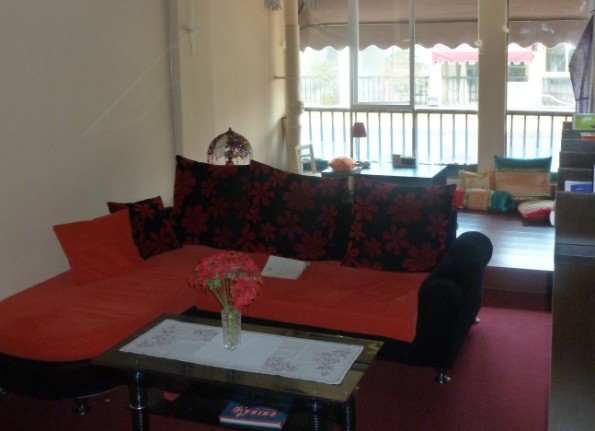
but since I can't do caffeine I didn't have much tea.
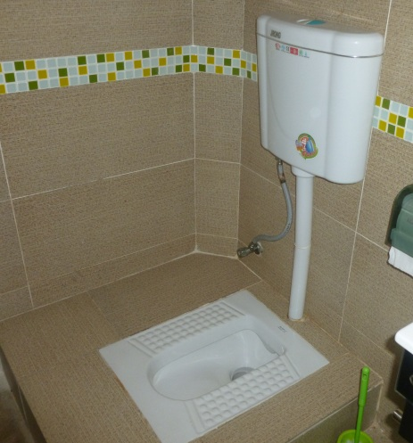

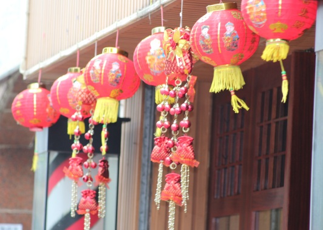
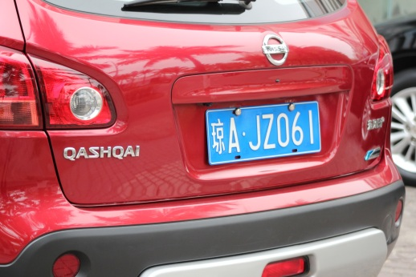
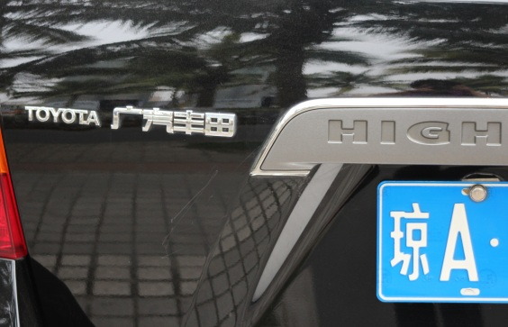

How about these for a shopping trip to town?
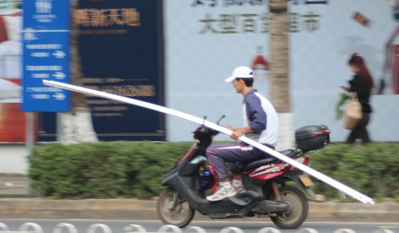

We visited Cambodia in 2007 and one thing that was very noticeable then was
the noise and
exhaust from the motorcycles and busses everyone used. I haven't seen a
single gas-powered bike
here, these are all electric bikes and natural gas powered buses.
It seems to help reduce both
the noise and the exhaust fumes.
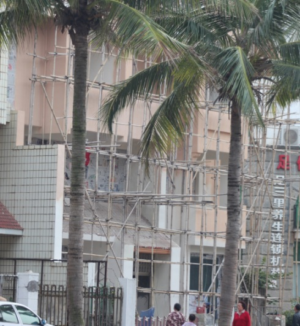
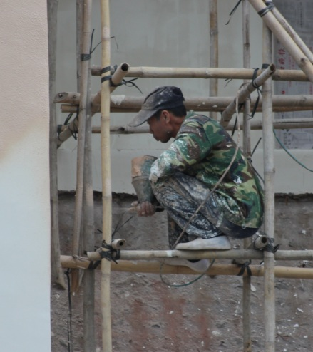
equipment of any kind. I guess the boss doesn't have Worker's Comp to worry about!

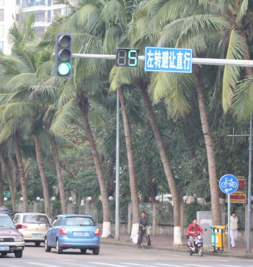
be green, then a red countdown of how long the light will stay red. Awesome!


they can be kind of pretty.
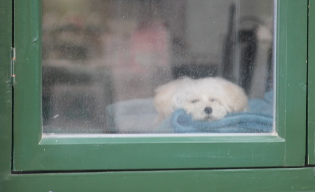
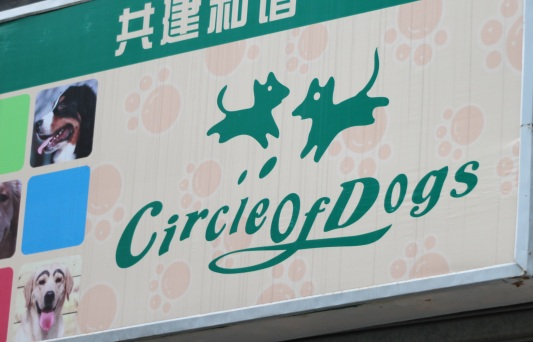
amazed to find that nearly everyone here seems to have a dog. There were several pet shops
near our house, including this one - notice that they may paint eyebrows on the dogs as a bonus!

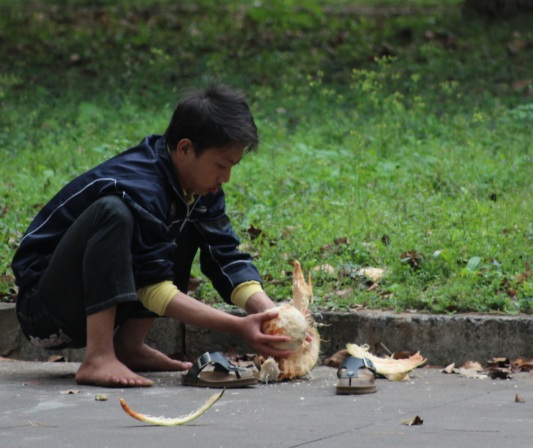
was clear and sunny. It was always warm, we're guessing a sticky 85 degrees or so.
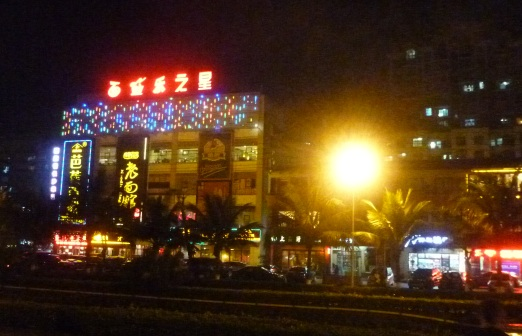

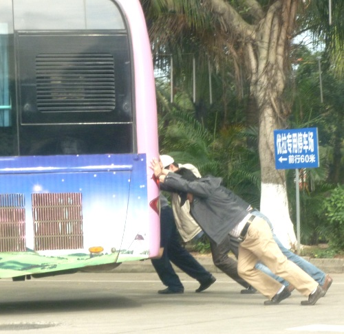
every single night. The ladies up front led and everyone else did their best to follow.

Zumba with the ladies? He almost keeps up with "Mr. Rhythm"
who was the guy in front of him. Eric is toward the back left.
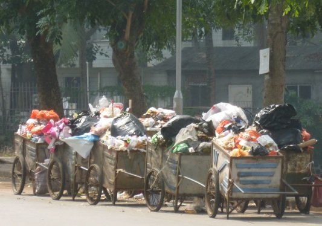
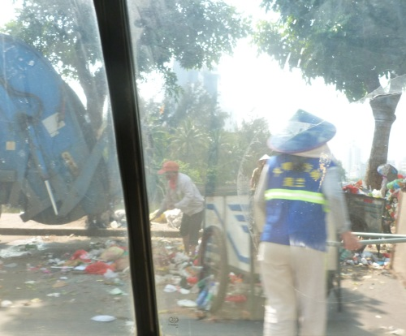
(sometimes even paying you for it) and then they sort it - selling off anything that has a
secondary market. The rest gets dumped into the street to be shoveled into a garbage truck.

just run the cement right up against them!
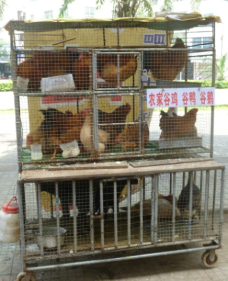

little lamb at the bottom. They had such a pitiful cry, I nearly cried with them!
Hot pot - street style.


The Lowe's of China. There was one of these stores on nearly every street.
Giant bottle of Vodka? Check. "Here son, help me hold this."
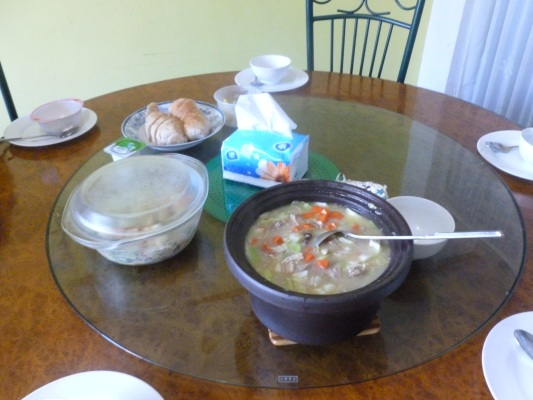

It was our "almost America" haven in the midst of the Chinese confusion outside.

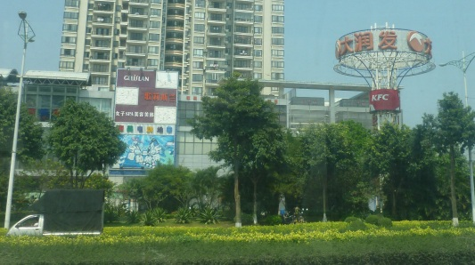
It contained one of at least 4 KFCs that are in the area. Also the only McDonalds I saw.


There were also several Pizza Huts (they seemed to share the locations with KFC.) We didn't
go there either, but were told that all have changed their menu to be more "Chinese style."

gave two lessons in English to 5th graders, at which point we discovered that we are
not gifted with skills for teaching.


using her as a navigational landmark. We saw people eating corn on the cob
in the strangest places - including the boarding area of the Shanghai airport.
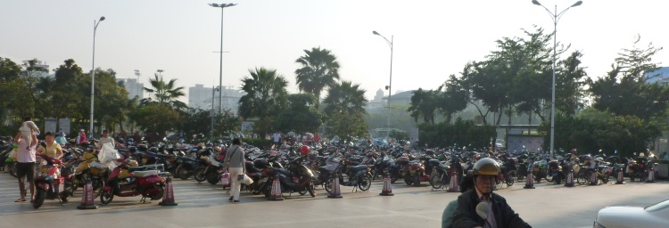
The RT-Mart parking lot. We've never seen so many bikes in one place before.
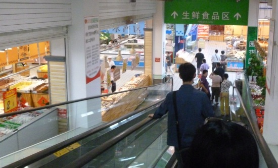
had automatic brakes that came on when you got on the ramp. Also, many escalators we saw only turned on when someone broke the light beam at the bottom, instead of running all the time. Smart!
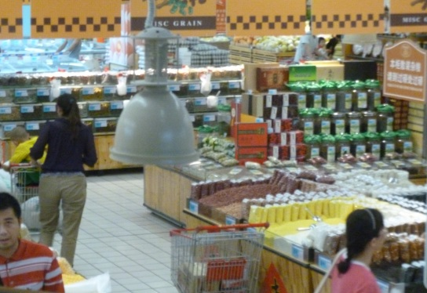

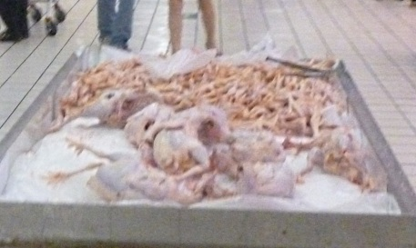
This is a pile of chicken bits, and bunches of chicken feet - yum!
About this time I got to see a kid in split pants being held over a trash
can so that he could
pee right in the middle of the produce department. I wasn't able to get
a picture but I had to
share the experience with you.
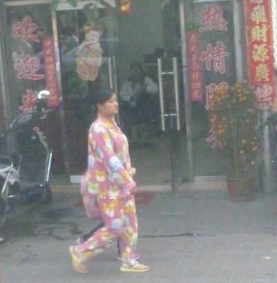
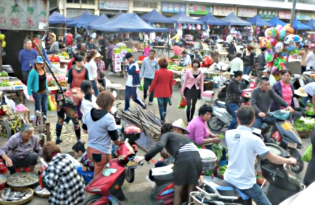

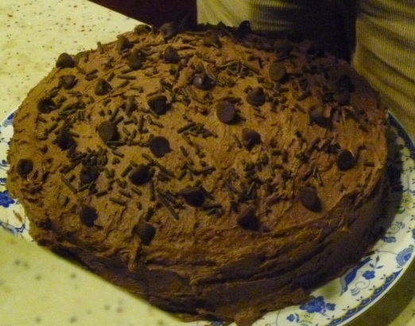

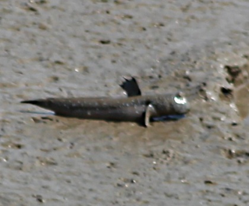
Angie cooked many, many excellent meals for us while we were there.
Lena and Diody
also showed their skills as masters of the kitchen as well. We ate like
kings there!

In case you wanted to see one even closer up.

This was a shack and a strange net contraption on the side of the canal area.

Fishing boats

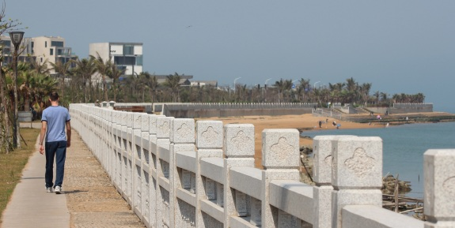
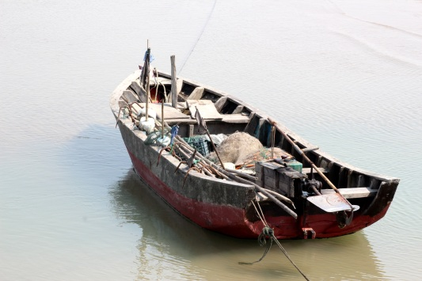
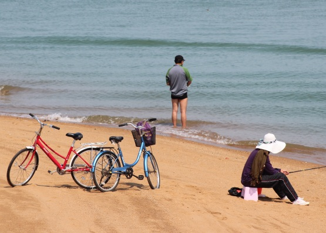
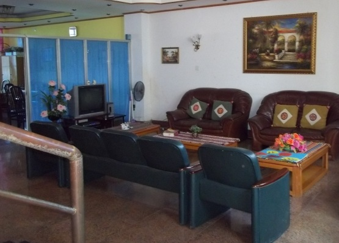
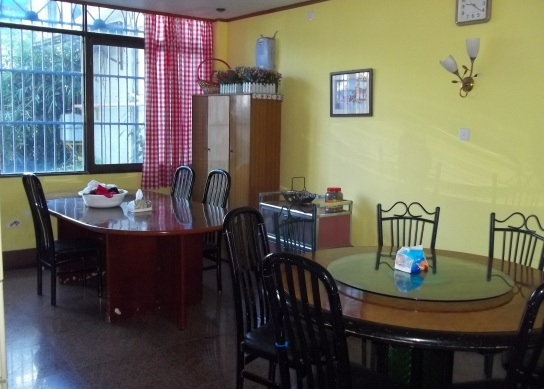


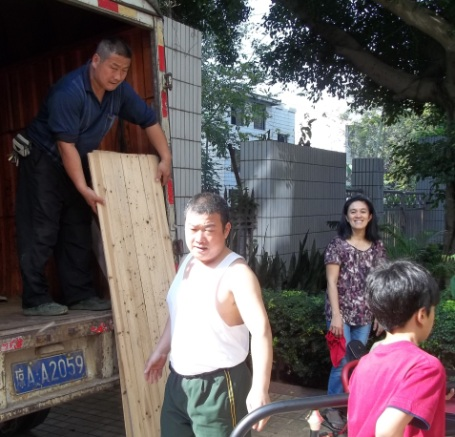

didn't feel quite so affectionate toward Eric, who had the nerve to want to be efficient.
They didn't like this since it meant more for them to carry!
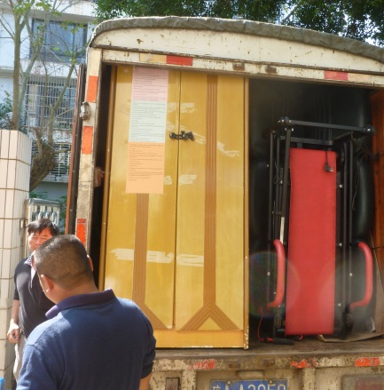

they just left him there for the drive across town to the new place. Here he is
trying to pass a cup of water out between the cabinet and the side of the van.
At least they gave him a cup of water before hauling him in that hot van!


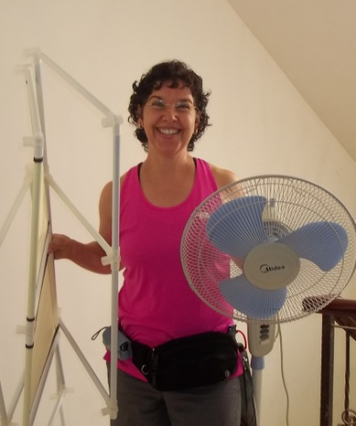
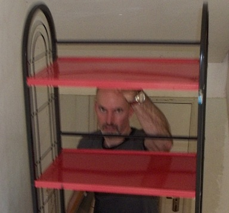
He wasn't angry, he just had his 'game face' on.


been left by the previous owner. They then promptly sold it right there in the
parking lot. Nice work guys!
bananas for the household.
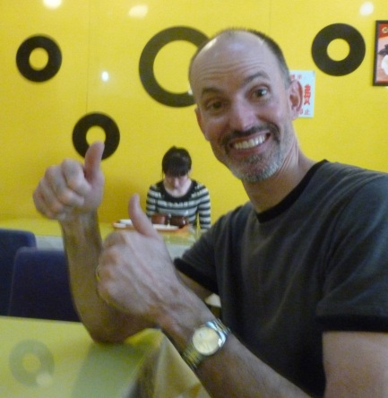

Chinese meal (meaning communal dishes and everyone using their own
chopsticks to dig in the shared plates.) Eric is thrilled to finally get a
chance to swap germs with 8 acquaintances.

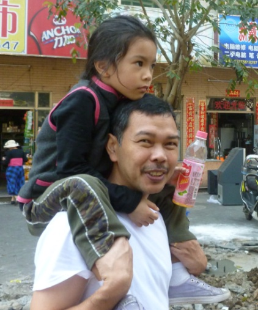

Later that night there was a teenager meeting at the house.

There were a lot of kids and they looked like a great
group.
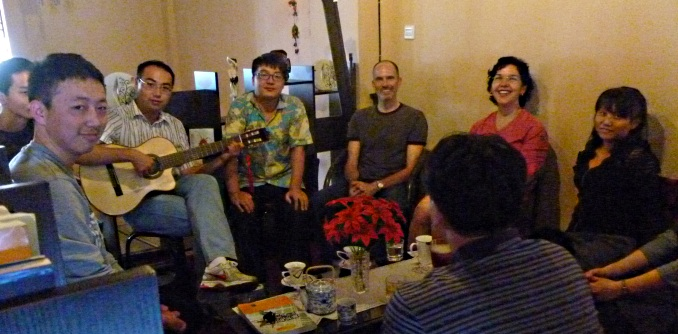
One of our tea talk sessions. Jackson, Derrick, Tom, Vivian, Eric, Shawnna, Ashley, YinYin's arms, and Gavin.
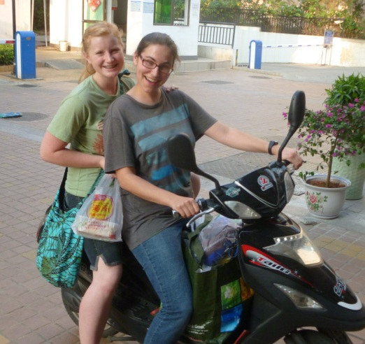


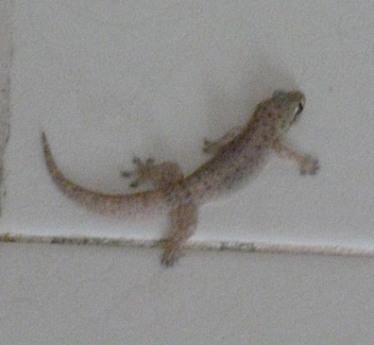
We would cheer him on, hoping he'd eat all the mosquitoes.
I got about 200 mosquito bites on my legs. I looked
diseased.
Fun times.
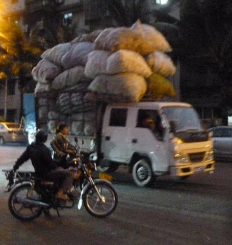
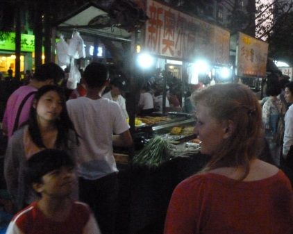
University. Eric watched but did not care to join us.


and had not been handled by dirty hands as much as some of the other food.


was having a great nap on his Dad's eBike right in the middle of all the fuss.
milk, then put it in this metal pan that must have dry ice beneath it because it
quickly turns into ice cream. I had Mango and it was good, so rich I could only
eat half.

That's when we found that those guys drive even crazier than the cab drivers - and cab
drivers routinely drive on the wrong side of the road, honking at oncoming traffic to suggest
that they move out of the way.

The Pizza Hut sign - this isn't how I remember Pizza Hut from my childhood, but
maybe they've changed in the past few decades.


Fun with translations. This is a coffee shop with four levels of coffee: Plain taste, Warm, Freedom, and Rigorous.
This was on a packet of underwear in the grocery store. I loved how they translated
"Playboy Bunny" into "Fair rabbit childe" - perfect.
see him, it makes him very happy.
The sign said "Men" and "Women", making it look like the
men should pee on the tree on the left,
and the ladies should go behind the tree on the right. The actual toilet
was off to the left about 50 yards.

lost. We had to call Lena from a cab so that she could tell them where to take us to
get us back home. This time Diody decided to take us there himself so we'd make it home!
Back massager machines

Wax on/wax off machines, just like in the movies.


This place was eaten up with brides. These are two of the 4 or 5 we saw there.
They were all getting pre-wedding pictures taken.
Four-wheeler rides at the beach.


Notice the people drinking out of coconuts. There's a lot of that here.
They often throw the meat away, but at home young coconut meat it is worth
a lot of money!

A dragon made out of shrubbery in Evergreen Park in Haikou.

More meat exposed to the elements in the grocery store. This takes some getting used to.


has seen in his lifetime - more changes than most people will ever see, I'm sure.
Eric, Kari, and I moved into the new house. The family followed on Friday.


I imagine this sign was ordered via phone and the "t" just
didn't come through.

the street, then he started digging in his navel. He finally pulled his shirt
down after he saw me taking a picture. I ruined all the fun!
anywhere - like on the floor of the bus while you're sitting beside someone.
The raising of the shirt to expose the belly seems to be very common here also.
I guess because of the hot weather, men just need to air out the
gut every once
in a awhile.
so we get these amazing stares. I had always thought it was human nature
for people to smile back if you smile at them, but this is not true. We get what
we call, "the turd eye" quite often. I think they know it at birth because some of
the harshest looks we get are from the smallest children.
But then there are some people who treat us like celebrities. They
get so
excited to see us and enjoy playing the game of "try to understand what
the
foreigners are saying". Just like anywhere, there are all kinds of
people.
The general rule was that in a group, the Chinese were not very
friendly. However,
when you were one-on-one or in a small group, they were wonderfully
friendly.
We were amazed by how quickly we made new friends who feel like good friends
already.
Shen Gao school
This was the site of our attempts at teaching English
It wasn't a friendly greeting so much as a way of teasing us, but overall the kids are sweet and friendly.
It made Eric and I sit up straight and we didn't even know what she said!
our second attempt at English with 5th graders.
The little guy up front caught me taking pictures - he was supposed to be reading out loud.
doors of any kind and no one ever shuts the outside door. That way you can see people
outside because hey, who knows when someone you've been looking for will walk by, right?!
The sink is outside and has a bar of soap inside a knee-high panty hose
tied to the sink.
And after a couple hours of using blackboard chalk, you're glad to see
it!


to cross the road here. The rule of the road is, "Right of size" not "Right of way" and people
are the smallest (also make the least damage to your car) so they don't mind hitting you so much.
from the sun. It looks very hot and uncomfortable to me!
Lena getting some nice veggies for a future meal

nearly always in use. One of them even sings the ABC's in English.

of raw meat. The Chinese really like to have a relationship with their food before eating it.


on this day we honestly had nothing else to wear. The washing
machine was still at the old house and all of our clothes were dirty
except for what we had on. Man, it was embarrassing.
And don't even get me started about the tennis shoes with dress slacks...

It was an hour-long slice of heaven for only about $12 (US) per person. I don't know
why we didn't go back every single night! Here Eric reacts to the scalding water foot bath.
This sign accompanied the giant fish, "Walrus vilent and do not close touch." Roger that.

apartment is walking distance from the seashore and the nice park. Here the local school
kids clean up the beach.
in order to make it on time. We had been warned never to take a rickshaw because they
drive too crazy. Considering how everyone else drives there, this is a big statement.
We did find out that what they said was true. These guys are nuts!
then up to a 3rd floor apartment in the new place. Tough work!
chanted so that they'd all stay in step with each other
down the stairs.

This was one of several we had
where the fish still had their faces
attached.

the menu was an interesting mix of almost-American-looking food.
we visited. I tried to do a spin class but all the bikes were already
taken, so we lifted weights instead.

and just in time for the service to start too!

Restaurants in China can be loud and a bit chaotic, but this place was very quiet.
90 minutes so I guess they enjoyed it. This is Decker, Red, and Catherine - great kids.

Pillar
It was called Double Happiness and was located at a large, nice mall.


(starting at 12 o'clock), Wenchang chicken, roast goose, honey roasted pork, and bok choy. Yum!
I was taking a picture of the Goose Heads, but this guy thought I was taking a picture of him.
Those crazy Americans, you never know what they'll be taking a picture of next!
they do not give napkins in restaurants, paper towels in restrooms, and often
no toilet paper either. If there is toilet paper, there is only one dispenser
outside of the stalls so you have to get what you need beforehand, or take your own.
So anyway, we were excited to get to dry our hands after washing them. It's the little things!
Eric said he never saw us more excited during the entire trip.


among hundreds of Chinese. It was a strange feeling.
beach resort town of Sanya. We didn't mean to get the fancy seats, but we couldn't understand
the ticket lady. This was one time our misunderstanding turned out for the very best.


I think it is similar to being American Indian in the U.S.


My friend Hattie's mom owns a ceramic painting business. I took this to show her that maybe
they could expand their business to be like this outfit. Vein painting could become all the rage.
grass until we saw this. We had to take off our shoes and walk on it.

where you can choose the eel, puffer fish, or fish of your choice for your meal. These are eels.


The swanky pool at the beautiful resort.
She put a flower in the hair of each newly arrived female.

selected couch for privacy and mosquito control. There were often people sleeping or just laying there.


Trying to be artistic
We discovered that we didn't get the memo about the dress code for touristing.

We went to the Luhuitou scenic area, which I'm told means "Deer Looks
Back" - but I have no idea what that has to
do with anything. It is a park they've built around an area where there
are lots of granite boulders out in the sea.
We went there thinking Eric could do some climbing, but didn't realize he'd be
in the middle of a few hundred tourists.


bust area gets involved in a lot of posed pictures there.


I totally think this should be his
new nickname.
Sign on a chair swing. I think these are words to live by.


Love Square is over that way.


Shawnna: "I'd like a picture in front of these flowers, but I look so bad today."
Supportive Husband Eric: "That's OK, I'll just move WAY back."


This is the train back to Haikou - no fancy enclosed seats this time.
of this pretty flower. Just imagine that the picture is sharp and clear, OK?

stare at the white people anyway so this way no one had to crane their neck.
easy and enjoyable. Here they force an orderly line for Taxis at the train station.
Without the intervention of authorities, the Chinese don't line up
well. It's more like a mob of
cutters all getting in front of each other.
When taking a taxi, please pay by the meter. Get out of the bus, please bring your belongings.
In case of refuse or other serious quality problem, please remember the time, place, car number,
driver's supervision and cartoon number. Tickets, and other requirements, and to the local
department of pipe complaints, complaints telephone: 66665666
(we got to help her choose that name!!), Jesmine, and Kuang Kui.
This sign was on a sliding door. Unfortunately, I was still having trouble with
the close-up focus. It said, "Please avoid crushing injury." I am on board with this.


Gina & Ina (pronounced Ena)
They are two of the good friends we made - such sweet girls. And sisters, in
case you couldn't tell!

saw some boys doing hand stands and decided to join in. The kids LOVED it.
part of the lesson aloud.
We have a much greater respect for all teachers now, that was very hard!
Unfortunately, Caleb & Rebekah were already in bed before I thought of taking
this picture on our last night.
Thanks for a great trip!
Americans are always asking me to talk about the cultural differences we
saw there. I've tried
to gather some of them here. Please keep in mind this is just what I saw
during a very short
trip, so I could be way off base with many of these!!
| China | America |
| Almost no paper towels available. Kleenex-type tissues are used in homes in place of them. No napkins provided at restaurants. Very limited amounts of toilet paper provided in public restrooms. | We live by paper towels - using them for plates, coverings over dishes in the microwave, and cleaning. We expect lots of napkins to be available at all places where food is served, and toilet paper to be provided in even the most primitive locations. |
| No hot water in homes except in the showers. | Hot water is available at every sink in the house and in the showers and bath tubs. |
| Pedestrians beware - not even the sidewalks are safe! | Pedestrians are king. Pedestrians have the right of way in America. |
| Child traffic safety is not regulated by the government. | In America, there are laws about child safety seats that are strictly enforced. |
| In conversation, the typical Chinese person's goals
seem to be 1) Do not offend 2) Communicate your point If the two come into conflict, it is better to avoid offending someone and than be understood. |
An American's conversational goal is only to communicate their point. I think in America we assume that the other person knows we don't want to offend them, so we just say what we're trying to say in the most direct manner possible. |
| The Chinese drink hot or warm water, even on the
warmest days. There is a general belief that cold water is bad
for digestion. Americans are seen as crazy for our "love
of ice."
|
For most Americans, if you placed a glass of warm
water in front of them at a meal they would stare at it like it came
from another planet. We have no concept of drinking warm or
hot water with meals.
In America, meals are always accompanied by ice water and usually another iced beverage. I personally like lukewarm water, but that's because I'm often cold in air-conditioned restaurants. |
| Meals are eaten family style without the use of serving spoons. Shared plates are dipped into using the same chopsticks that you've been putting into your mouth. | Many Americans are not happy about sharing saliva with
dinner partners at this level. Especially when one of them is
sick. |
| The Chinese seem to eat Chinese food almost all the
time.
We saw this in Italy too, they just did not seem interested in other types of food.
|
Americans eat so many different kinds of food, I sometimes wonder if there is such a thing as "American food." In Oklahoma, Mexican is the most popular type of food, but we also eat a lot of Thai, Chinese, Indian, and Mediterranean food. Our version of American food is a chunk of meat (steak, chicken breast, or lamb shoulder) grilled on the outdoor grill, with a side of veggies, a salad, and (for my husband) a slice of whole wheat bread. |